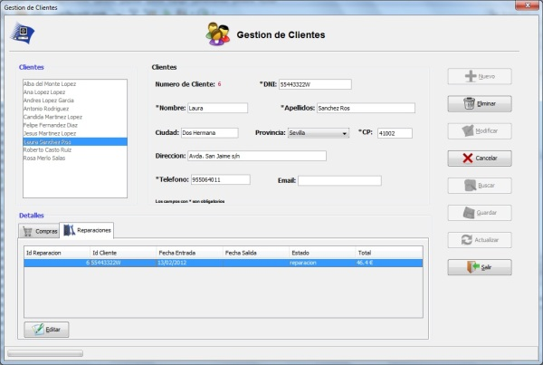

Gestion de Clientes
Gestion de Clientes
Desde el menu gestion de clientes se gestionaran los clientes del sistema
Se podra dar de alta,baja,editar y buscar clientes, tambien se mostraran las reparaciones y compras de que tiene cada clientes.
Cuenta tambien con la opcion de guardar y deshacer los cambies hechos en los clientes
Imagen del menu Gestion de Clientes.

Las opciones del menu gestion de Clientes son:
- Nuevo : para dar de alta un nuevo cliente
- Eliminar : Para eliminar un cliente (solo se pueden eliminar clientes que no tengan reparaciones o compras asignadas)
- Modificar : Para editar un cliente
- Cancelar : este boton se habilita despues de un alta o una modificacion y sirve para cancelar un alta o modificacion
- Buscar. : Para buscar un cliente
- Guardar : para guardar los cambios realizados
- Actualizar : deshace todos los cambios sin guardar y actualiza la lista de clientes con los datos de la base de datos
- Editar : para editar una reparacion(este boton esta situado abajo de la lista de reparaciones y solo se podran modifacar reparaciones que esten en estado reparado o reparacion)
- Salir : Cierra el menu de gestion de clientes